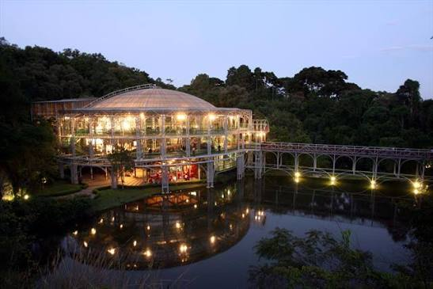
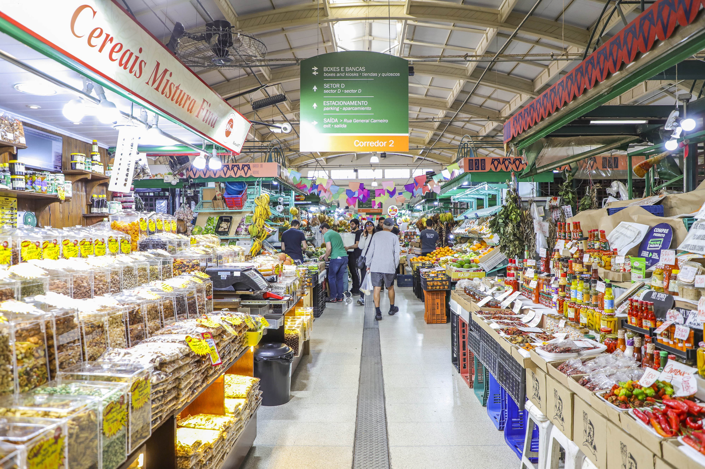

Jardim Botânico
A história da estufa e dos jardins.
Escute o guia enquanto caminha.
A história da estufa e dos jardins.
Como o teatro foi construído entre as árvores.
Um passeio sonoro pelo calçadão do centro.



